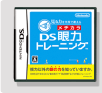
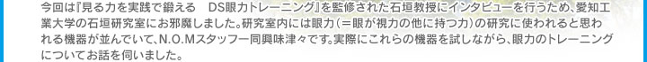

|  | ||


※石垣教授に『眼力』について解説していただいたインタビュー記事を「ＤＳ眼力トレーニング」公式ページに掲載しています。「そもそも『眼力』ってなんだろう？」という疑問をお持ちの方は、まずはこちらをご覧ください。
N.O.M：前回も伺いましたが、石垣教授はどのようなことを研究されているのでしょうか？
石垣：私が研究しているのは「スポーツビジョン」と呼ばれていて、スポーツの上達と「眼の力」の関係を研究する学問です。そのスポーツビジョンの一分野に、眼が視力の他に持つ力、すなわち「動体視力」「瞬間視」「眼球運動」「周辺視野」「眼と手の協応動作」などをトレーニングする「ビジュアルトレーニング」という分野があります。今回の「ＤＳ眼力トレーニング」では、この眼が視力の他に持つ力のことを「眼力＝メヂカラ」とよび、これをトレーニングすることができます。
N.O.M：「ビジュアルトレーニング」ではどういったトレーニングを行うのでしょうか。
石垣：「ビジュアルトレーニング」では、まず眼が持つそれぞれの力を検査し、現在の自分の眼の状態を知るところから始めます。次にトレーニングでそれらの眼の力を強化することで、眼の力が弱かったために発揮できなかった潜在的な運動能力を向上させて、スポーツの成績アップに寄与することを目的としています。
「ＤＳ眼力トレーニング」もこの考え方に基づき、まずは「眼年齢」という形で自分の眼の力を測定し、それに基づいたトレーニングを行うことで、眼の力の向上を目指します。
私の研究室では、眼の力の測定やトレーニングに、「スポーツビジョン測定機器」という専用の機器を使用しています。眼の力ごとに異なる機器があるのですが、それらが実際にどういったものなのか、今回は２つのトレーニングを体験していただきながらご説明しましょう。まずは素早く判断し、正確に反応する力である「眼と手の協応動作」をトレーニングする機器からです。
「ＤＳ眼力トレーニング」もこの考え方に基づき、まずは「眼年齢」という形で自分の眼の力を測定し、それに基づいたトレーニングを行うことで、眼の力の向上を目指します。
私の研究室では、眼の力の測定やトレーニングに、「スポーツビジョン測定機器」という専用の機器を使用しています。眼の力ごとに異なる機器があるのですが、それらが実際にどういったものなのか、今回は２つのトレーニングを体験していただきながらご説明しましょう。まずは素早く判断し、正確に反応する力である「眼と手の協応動作」をトレーニングする機器からです。
| 石垣：この黒板のようなパネル上に次々と赤い光が点灯します。赤い光が消える前に、そこを指先でタッチしてください。制限時間内にいくつタッチできたのか、どれだけ時間がかかったのかで「眼と手の協応動作」の力を測定します。なるべく短い時間に、たくさんタッチできるほど、「眼と手の協応動作」の力が高いことになります。 |
石垣：はい、終了です。60個のターゲットのうち51個にタッチできましたね。所要時間は42秒ですか…年齢は38才と聞いておりましたが年相応というところですね。これが31、32秒ぐらいでクリアできたら一流スポーツ選手並です。このトレーニングでは、眼で見たものに素早く反応する速さを測定しています。ちなみに、素早く反応するには、まずどこが点灯したのかを眼で見る必要があります。そのためディスプレイ全体を周辺視で見て、視野を広く取ることも大切です。
「眼と手の協応動作」のトレーニングは、「ＤＳ眼力トレーニング」の中では例えば「連続タッチ」、というトレーニングになっています。
「眼と手の協応動作」のトレーニングは、「ＤＳ眼力トレーニング」の中では例えば「連続タッチ」、というトレーニングになっています。
では、もうひとつ別のトレーニング機器をご紹介します。
N.O.M：今度はどの眼力を測定するのでしょうか？
石垣：次は動いているものをはっきり見る力である「動体視力」を測る機器を体験していただきます。白いスクリーンを、「Ｃ」の図形が左から右へ、すごい速さで何度も横切っていきます。横切るスピードはだんだんと遅くなっていくので、「Ｃ」が上下左右どちらを向いているか認識できた時点で手元のスイッチを押してください。どのくらいの速さのときに判別できたかによって、動体視力を測ります。
「Ｃ」の動きが速いときに認識できるほど、動体視力が良い、ということになります。
「Ｃ」の動きが速いときに認識できるほど、動体視力が良い、ということになります。

石垣：では、台にアゴを乗せて頭を固定させて前にある半円状のスクリーンを見てください。スタートさせますよ。最初はすごく速いですからね。
石垣：はい。終了です。測定結果としては50代後半のレベルといったところです。動体視力の分野は苦手のようですね。
N.O.M：速く動くものを捉えるコツなどはあるのですか？
石垣：動いているものをそのまま眼で追いかけるのではなく、動くものが通ると予測される場所に少し先回りして視線を飛ばし、迎え入れるような形で見るのが大切です。これは動体視力だけではなく、眼球運動の力も影響します。「動体視力」は、「ＤＳ眼力トレーニング」では、例えば「シャッフル」、というトレーニングで鍛えることができます。
石垣：ちなみに、眼というのは左から右方向へ動く物の方が動きを捉えやすいという調査結果があります。これは右利きと左利きの違いが影響するのですが、右利きの場合ですと、何か動いているものを掴む場合、右から左に動くものよりも左から右に動くものの方が余裕を持って掴みやすいですよね。世の中、右利きの人の方が多く、右利きの人たちに合わせてものが作られていくことが多いですから、普通に生活していると左から右にという視線の流れを多く経験することになります。結果、眼の動きがそれに適した形になるのではないかと思います。
今回体験していただいた２つの「スポーツビジョン測定機器」の他にもさまざまな機器がありますが、こうした機器で使って行うトレーニングと同じような効果が得られるように、「ＤＳ眼力トレーニング」の各トレーニングを監修しています。
今回体験していただいた２つの「スポーツビジョン測定機器」の他にもさまざまな機器がありますが、こうした機器で使って行うトレーニングと同じような効果が得られるように、「ＤＳ眼力トレーニング」の各トレーニングを監修しています。
N.O.M：今回のような機器を使わなくてもできる眼力のトレーニングはありますか？
石垣：それでしたら眼球運動のトレーニングはどうでしょうか。眼球運動とは、眼を素早く正確に動かす力のことです。具体的にはこうして両手の親指を立てて、顔を動かさずに眼だけで親指の爪の先を左右交互に追いかけます。さらに指と指の間を閉じたり広げたり、それぞれの位置を上下や斜めに変えたりして意識的に色々な方向に視線を動かしてみてください。その際、爪に焦点を合わせ、はっきり見えるようにします。はっきり見ることで、眼を急停止させる訓練になり、普通に眼を動かすよりも眼球運動の正確性が向上します。爪の先に数字やアルファベットなどを書いた紙を張ると、焦点を合わせやすくなりますよ。「ＤＳ眼力トレーニング」では眼球運動のトレーニングは、例えば「トリプルＣ」というトレーニングになっています。
N.O.M：眼力を鍛える場合、普段生活する上ではどういったところに気をつければよいでしょうか。
石垣：このソフトで眼力と呼んでいる力、すなわち眼が視力の他に持っている力は、身体の成長と共に発達し、何もしなければ加齢と共に衰えていきます。ところが年配の方でも活動的な生活をしていれば、良い測定結果が出る傾向にあります。以前、高齢者の方々の動体視力についてデータを集める機会があったのですが、高い数値の方々にお話を聞いてみると、積極的に外出をしていたり、車の運転などをしていらっしゃいました。生活環境で眼力が鍛えられているんです。やはり眼を動かす生活を続けることが一番のポイントですね。
N.O.M：最後に読者の方へひとことお願いします。
石垣：今回ご紹介したように、元々は大きな装置を使って行うビジュアルトレーニングですが、「ＤＳ眼力トレーニング」で、それがどこでも手軽にできるようになりました。このソフトを通じて、人間には視力以外に「眼力」という能力があるという事実をたくさんの方に知っていただきたいです。新しい能力の存在に気づくことが、普段の生活やスポーツなどの趣味における活動の幅を広げることにつながると思っています。
N.O.M：本日はありがとうございました！
▲Ｎ.Ｏ.Ｍ６月号のトップページへ